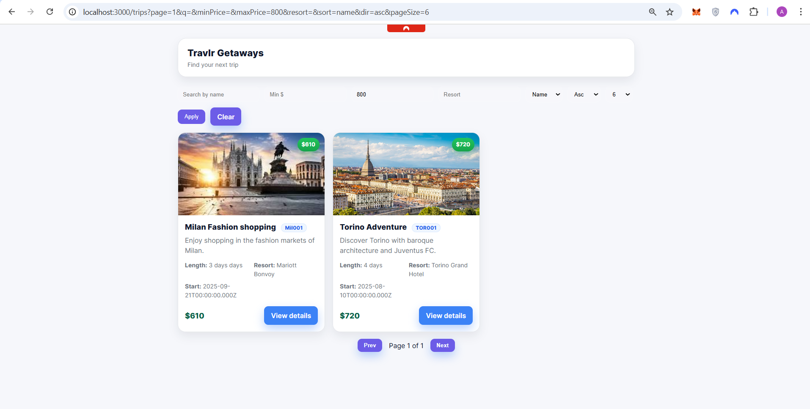
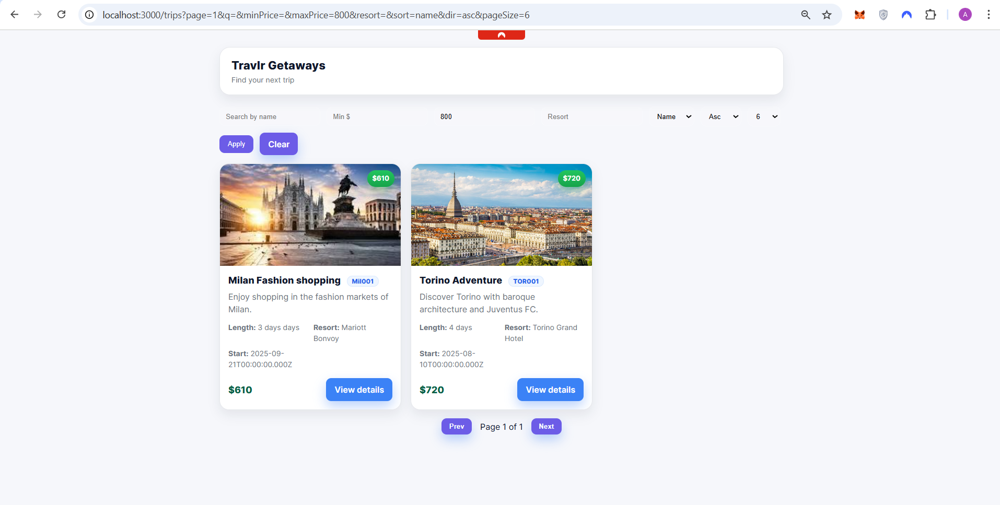

1) Software Design & Engineering
For the first enhancement, I focused on improving the project’s structure and organization. The original codebase had very little structure, so I refactored it using a proper Model-View-Controller (MVC) pattern. I added Helmet and CORS for better security, dotenv for environment configuration, and global error handling to improve reliability.
On the front-end, I replaced static HTML with dynamic Handlebars (HBS) templates to make it modern and responsive. These changes made the project cleaner, easier to maintain, and visually consistent, directly aligning with Course Outcome 2, which focuses on professional-quality communication through design and functionality.
Impact: The project moved from looking like a student demo to something a real travel company could use.
Before / After (Click on me)


 
